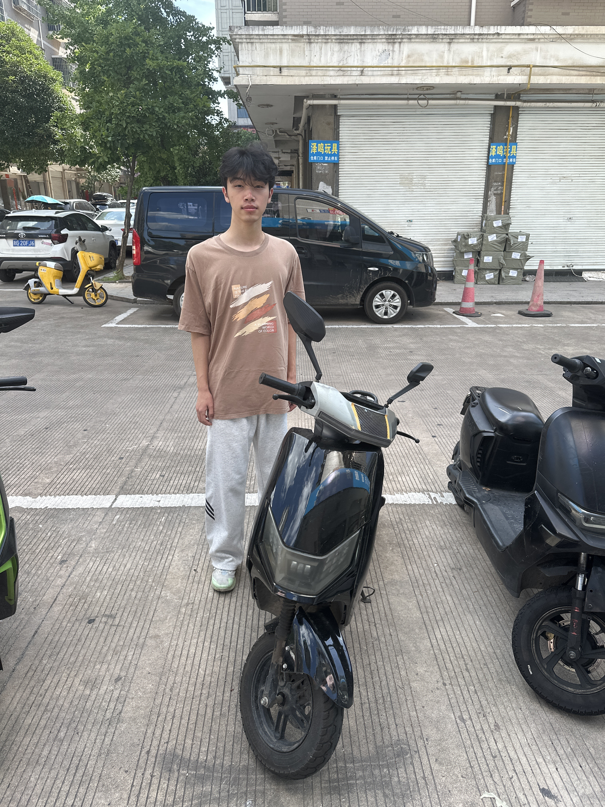

LOCAL LEGEND · CASE NO. 0001
王润鑫
一个传说，正在等待被本人否认。
听说他从不服输？
纯属朋友间的快乐整活 · 请勿当真
王润鑫
人物档案 / WRX—001 / 机密等级：嘴硬
传说级选手 · 今日仍在线

本人拒绝承认以上描述！
民间观察对象 No.001嘴上说“都行”，
嘴上说“都行”，
最后还是要按他的来。
据不完全观察，他是一位自信心稳定输出、主打一个“我觉得”的人物。外表云淡风轻，内心已经准备好三套反驳方案。所有描述均为朋友间玩笑设定，最终解释权归王润鑫本人——当然，他大概率会先否认。
人物姓名王润鑫
日常习惯爱装逼；说话自带“这有啥难的”气场
隐藏特长嘴硬；即使证据摆面前，也能先找个角度辩两句
被动技能把“我早就知道”说得像预言成真
弱点猜测朋友突然来一句：“行，那你来。”
“我不是嘴硬，我只是在等一个更合理的解释。”